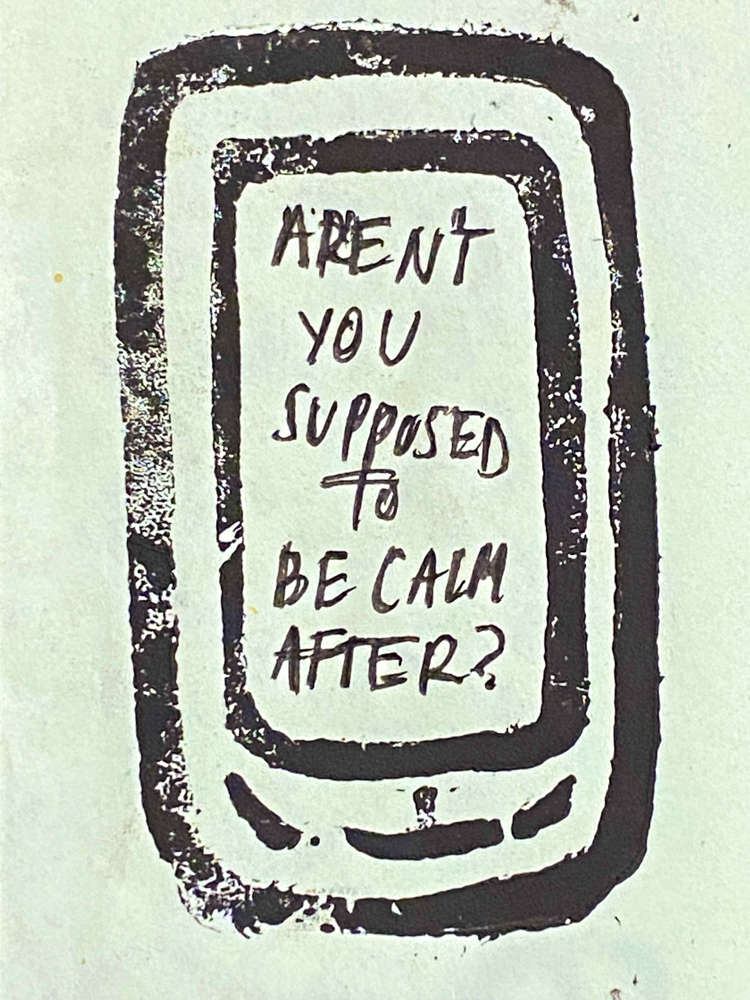
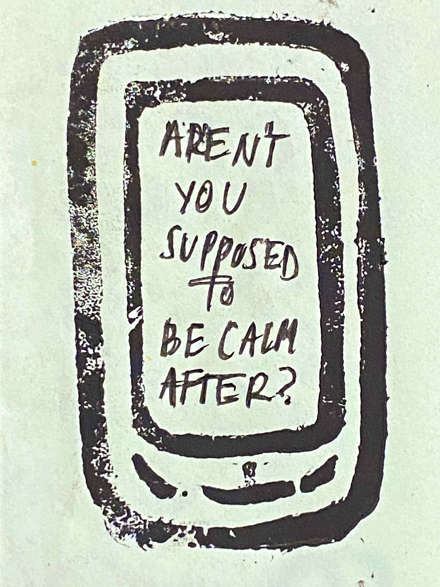
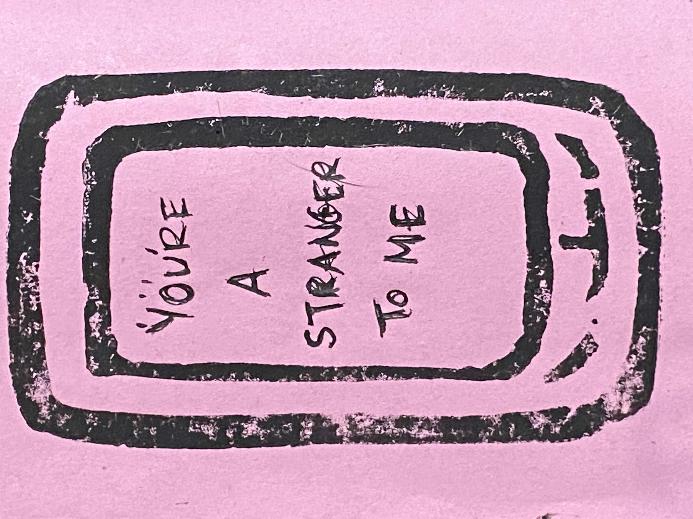
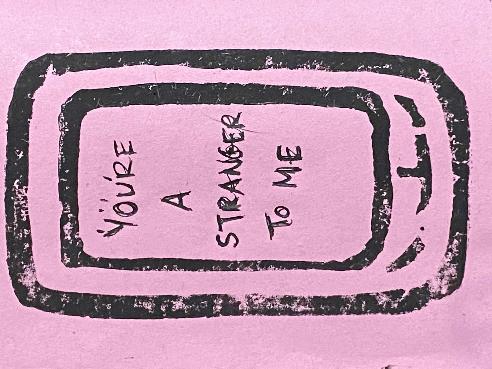

All of the readings, tests, wireframes, prints,
pieces
of prose, docs, and dossiers.
Research
- into the 21st century relationship
- Eva Illouz — Cold Intimacies:
The Making of Emotional Capitalism - Deborah Lupton — The Quantified Self
- Jaron Lanier — You Are Not a Gadget
- Mary Aiken — The Cyber Effect
- on tracey emin & intimacy in practice
- catholicism, confession, & me
- mind mapping & research mapping
- dating as a performance
- visual inspiration board
- doyle @ foyles
- investigate playlist
Experimentation
Plan
- where do i see this going?
- timelines & realise
Cold Intimacies: The Making of Emotional Capitalism by Eva Illouz has been my favorite book I've found
at the RCA yet. Although dated (written in 2007.....LOL at the fact that this is already dated! Who is
even using e-harmony anymore? I thought we all moved onto Hinge?), I found it really relevant to the
topics I'm exploring, and in-line with my personal experiences. The section of the book titled "Romantic
Webs" has several chapters surrounding self presentation online, virtual meetings, fantasy and
disappointment, and romance on the internet.
Illouz's analysis of the way we are expected to focus intensely on ourselves, our supposed interests,
and self-ideals in order to present ourselves "accurately" online is incredibly interesting. People will
attempt to break themselves out from the monotony of similar profiles they're being pinned against —
Illouz wording this as "one's sense of uniqueness [...] being sharpened by the Internet dating sites".
The monotony, however, stems from wanting to appeal to as many people as possible — the "cultural
scripts of the desirable personality".
The self has become a "commodity on public display"; entirely departing from the traditional perception
of love and attraction and placing people into an intense competition with others. Love, historically,
has been presented as somewhat unexpected and spontaneous, and linked to sexual attraction. "Love" was
scarce. Dating apps and internet-initiated relationships have changing this almost entirely, allowing
for another level of pickiness within a new, structured market.
The following quotes from Illouz really stood out to me — and might as well have sparked the interest
for the rest of my project: "Romantic relations are not only organized within the market, but have
themselves become commodities produced on an assembly line, to be consumed fast, efficiently, cheaply,
and in great abundance. [...] The internet seems to bring the process of rationalization of emotions and
love to levels not dreamed of by critical theorists".
Here are some quotes from the book:
“The internet is presented as a disembodying technology and positively so, in the sense that the movie
relies on the idea that the self is better revealed and more authentic when presented outside the
constraints of bodily interactions” p.75
“If the internet annuls or brackets the body, how then can it shape, if at all, emotions? more exacly,
how does technology rearticulate corporality and emotions?” p.75
Deborah Lupton's was also quite integral to my research. She speaks about the idea of building up your self-perception.
I also began to read through some of Jaron Lanier's "You Are Not A Gadget". Coming into the
library, I knew I wanted to focus in on finding literature surrounding our current relationship to
technology, and the direct effect of it on our interpersonal relationships. Lanier's book is somewhat of
a manifesto, commenting on how the internet has created a "widespread practice of fragmentary,
impersonal communication" that has "demeaned interpersonal interaction"
He briefly touches upon how my generation shares every detail of our lives across social media platforms
— blaming it on a need to "avoid the closed door at bedtime, the empty room, the screaming vacuum of an
isolated mind". I was really taken aback by this accusation; especially in knowing that it hits so close
to home. Another piece of Lanier's manifesto that stood out to me was the following quote: "the deep
meaning of personhood is being reduced by illusions of bits". This made me think quite a bit about the
way that we present ourselves on social media, dating apps, or just online in general — we have entirely
reduced ourselves to the outwardly most "interesting" bits of personality; which in turn, I believe
could be reducing our actual personalities and ways we expect people to act around us. .
Here are some quotes from the book:
”...Widespread practice of fragmentary, impersonal communication has demeaned interpersonal interaction”
p. 4
“The deep meaning of personhood is being reduced by illusions of bits” p. 20
”If you love a medium made of software, there’s a danger that you will become entrapped in someone
else’s recent careless thoughts” p. 22
”A computer isnt even there unless a person experiences it” p. 26
”If we are only able to be approximately moral, that doesn’t mean we should give up trying to be
moral at all” p. 39
”Young people announce every detail of their lives on services like twitter not to show off, but to
avoid the closed door at bedtime, the empty room, the screaming vacuum of an isolated mind” p. 180
Is it that by its indefiniteness it shadows forth the heartless voids and immensities of the universe, and thus stabs us from behind with the thought of annihilation, when beholding the white depths of the milky way? Or is it, that as in essence whiteness is not so much a colour as the visible absence of colour; and at the same time the concrete of all colours; is it for these reasons that there is such a dumb blankness, full of meaning, in a wide landscape of snows—a colourless, all-colour of atheism from which we shrink? And when we consider that other theory of the natural philosophers, that all other earthly hues—every stately or lovely emblazoning—the sweet tinges of sunset skies and woods; yea, and the gilded velvets of butterflies, and the butterfly cheeks of young girls; all these are but subtile deceits, not actually inherent in substances, but only laid on from without; so that all deified Nature absolutely paints like the harlot, whose allurements cover nothing but the charnel-house within; and when we proceed further, and consider that the mystical cosmetic which produces every one of her hues, the great principle of light, for ever remains white or colourless in itself, and if operating without medium upon matter, would touch all objects, even tulips and roses, with its own blank tinge—pondering all this, the palsied universe lies before us a leper; and like wilful travellers in Lapland, who refuse to wear coloured and colouring glasses upon their eyes, so the wretched infidel gazes himself blind at the monumental white shroud that wraps all the prospect around him. And of all these things the Albino whale was the symbol. Wonder ye then at the fiery hunt?
But not yet have we solved the incantation of this whiteness, and learned why it appeals with such power to the soul; and more strange and far more portentous—why, as we have seen, it is at once the most meaning symbol of spiritual things, nay, the very veil of the Christian's Deity; and yet should be as it is, the intensifying agent in things the most appalling to mankind.
yassss it that by its indefiniteness it shadows forth the heartless voids and immensities of the universe, and thus stabs us from behind with the thought of annihilation, when beholding the white depths of the milky way? Or is it, that as in essence whiteness is not so much a colour as the visible absence of colour; and at the same time the concrete of all colours; is it for these reasons that there is such a dumb blankness, full of meaning, in a wide landscape of snows—a colourless, all-colour of atheism from which we shrink? And when we consider that other theory of the natural philosophers, that all other earthly hues—every stately or lovely emblazoning—the sweet tinges of sunset skies and woods; yea, and the gilded velvets of butterflies, and the butterfly cheeks of young girls; all these are but subtile deceits, not actually inherent in substances, but only laid on from without; so that all deified Nature absolutely paints like the harlot, whose allurements cover nothing but the charnel-house within; and when we proceed further, and consider that the mystical cosmetic which produces every one of her hues, the great principle of light, for ever remains white or colourless in itself, and if operating without medium upon matter, would touch all objects, even tulips and roses, with its own blank tinge—pondering all this, the palsied universe lies before us a leper; and like wilful travellers in Lapland, who refuse to wear coloured and colouring glasses upon their eyes, so the wretched infidel gazes himself blind at the monumental white shroud that wraps all the prospect around him. And of all these things the Albino whale was the symbol. Wonder ye then at the fiery hunt?
i must be somebody else you've known
there’s an
innate need to share, let me know why
it's not like you’ve cared to begin with
small screen clutched to your body as you sleep,
those you’ve left in that web send
ceaseless greetings without a clue
of the overly warmed body beneath you
and to your right until the morning
no need to make it more of a thing
to validate past what it's become
the tracks you choose to open our eyes to
seem to speak for themselves
but your actual explanation is casual, unbothered
bareboned confession is your specialty
but what is confession
without the aims of absolution?
do you just find anyone who will listen
to take you in
more ways than one
asking how to spell
for your own sake
to camouflage a new reality
without a surname
is it pathetic you won’t even write my name
with actual ink?
you couldn’t write what you do to me?
wouldn’t that make you feel better?
tom verlaine
it’s kind of on me this time
id argue
mixed signals are easy to give
when you’re south with your friends
i’ll never meet
last minute move
i question on the walk back
looking through my own glossary
of potential engagements
that might suit me better than
your proposal
you’ll never meet mine either
but they’re keen to make sure we do
at least once
its funny how easy it is to tell
when you’re looking right through me
it's not like anything i say matters anyways
small talk in a budget bar you didn’t offer to pay for
my confession is embarrassing to admit to him
as its involving someone like you, to be fair
there’s no connection made through talking about
the same bands everyone knows for the lesser part of an hour
why'd you expect anything more than a kiss?
i’ve made this mistake before
of following through and through
splitting myself like that just won’t work again
i just hope he looked away this one time
why do my friends always gasp when i tell them about you
they all have one just like i do
so i never really understood the confusion
when i’d tell them about you smile on my face
what do you mean you never told someone else about the
deepest pits of your being
especially when we know He is so eager
to hear from you and your own
and those horrible things you do
scrawl it in a book
much like the one you fashioned for me
your handwriting as letterheads
to remind me of who this is all really for
I can't help it; I'm human, am I right?
a prompt to recall the nature of my sins
why does it work in the way that
the only one to beg for absolution
in my first grade class
is a little girl with too much shame
flushing herself out to please you?


 


 



link to video flip through
LINK HERE